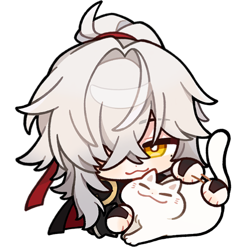

About Me
Halo!! Salam kenal semuanya, tak kenal maka tak terkenal.
izinkan diriku memperkenalkan diriku yaw!!! ฅ^>⩊<^ ฅ,
namaku Aflidiah biasa dipanggil Diah.
Aku dari Universitas Yatsi Madani, prodi Ilmu Komputer.
Alasan ku ingin membuat portofolio se aneh ini karena aku ingin memamerkan husbu favoritku. kalo ada yang menanyakan alasannya , ya karena aku menyukai husbu ku, mereka semua karakter yang keren bagiku, haha
Top 3 husbu terfavorit
Neuvilette
Neuvilette seorang Chief Justice di Fontaine, atau dikenal Sebagai Hakim. ia memiliki sifat yang tenang seperti Air, suka meminum Air dari berbagai macam wilayah. karena dulunya dia Adalah Naga Sovereign Hydro, jadi ya wajar saja Suka minum Air. katanya Minum Air Putih itu sehat lho~ Jadi, ayo minum Air Putih agar tetap sehat
Selain punya sifat yang cukup tenang, bijaksana, dan serius, terutama soal keadilan. Dia sangat menghargai hukum dan kebenaran, dan nggak ragu untuk bertindak tegas demi itu.
Kadang, dia bisa terlihat agak jauh atau sulit dibaca, karena dia cenderung menjaga jarak dengan orang lain, tapi itu bukan berarti dia nggak peduli. Kekuatan dan kewibawaannya juga bikin dia jadi sosok yang dihormati, tapi dia tetap berusaha adil dan objektif dalam setiap keputusan yang diambil.
Jing Yuan
Jing Yuan... Dia itu seperti sosok yang sangat memikat, Seseorang yang punya aura ketenangan, tapi juga kekuatan yang luar biasa. Dia itu tipe orang yang nggak perlu banyak bicara untuk menunjukkan siapa dirinya.
Setiap kali dia melangkah, rasanya seperti dunia di sekitarnya ikut tenang.
Meskipun dia sering terlihat serius, ada sisi lembut di dalam dirinya yang menunjukkan betapa dia peduli dengan mereka yang dekat dengannya. Jadi, kalau menurutku, dia itu tipe orang yang cool, penuh wibawa, tapi juga sangat perhatian di balik ketegasannya.
Wriothesley
Wriothesley atau panggilan kesayangan ku Rizzley, dia adalah Kepala Sipir penjara di Fontaine,Teyvat.
Secara fisik, Wriothesley memiliki penampilan yang tampan dengan rambut gelap dan terselip rambut putih nya keperakan yang terlihat seperti telinga Anjing Husky dan mata biru. Kepribadiannya cenderung serius, namun dia tidak kehilangan rasa humor yang kadang meskipun dalam cara yang cukup tidak biasa. Teh menjadi cara baginya untuk menenangkan pikiran setelah hari yang panjang dan penuh tantangan. Dia sering memilih teh dengan rasa yang kuat, seperti teh hitam atau teh herbal, yang memberinya ketenangan sekaligus energi untuk melanjutkan tugasnya.
Mutual Yuk!!
Kalau kamu minat mutual bisa hubungi aku di paltform dibawah sini ya!!!